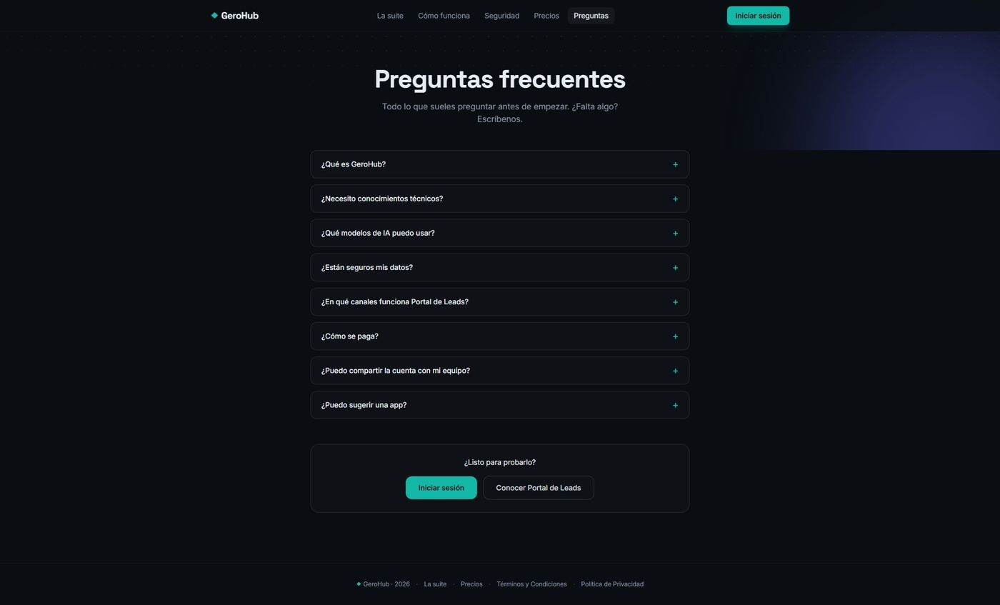
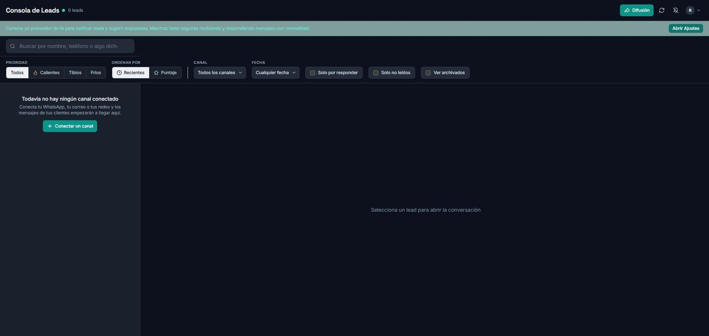
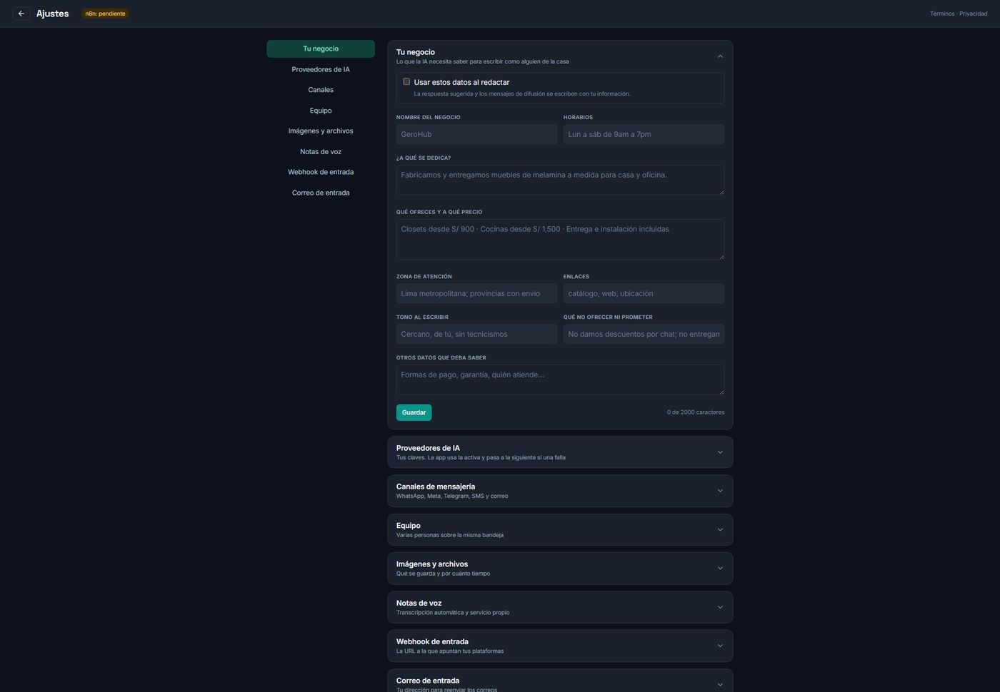
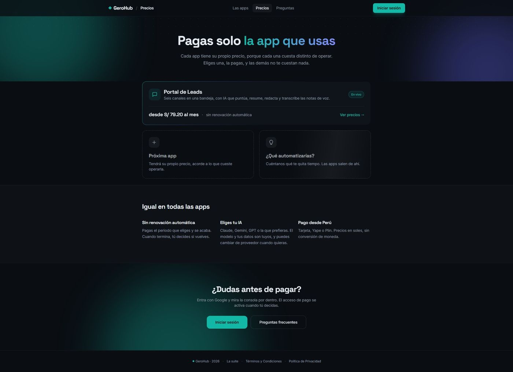

GeroHub
An automation suite where each app solves one job completely. The first, Lead Portal, gathers six messaging channels into a single inbox and uses AI to say who to answer first.
- Role
- Design and full development
- Status
- Live
- Infrastructure
- Cloudflare edge
- Site
- gerohub.com
The problem
A small business in Lima receives enquiries through WhatsApp, Facebook, Instagram, Telegram, email and SMS. Nobody has time to check six apps, so messages pile up and the person who was ready to buy gets lost among the people who were only browsing.
How I solved it
Lead Portal receives everything in one inbox and scores each conversation from 1 to 100. Voice notes are transcribed automatically and count toward the score, so you stop listening to two-minute audio messages just to find out whether a reply is worth writing. The user tells the AI once what they sell, their hours and their limits, and from then on it drafts replies that sound like someone from the team.
- Six messaging channels in a single unified inbox
- Multiple accounts per channel, each tagged by origin
- Broadcast with pauses, respecting each platform's rules
- Shared inbox for teams, without duplicated replies
The decision that defines the product
The user brings their own AI key — Claude, Gemini, GPT, DeepSeek, Mistral — and pays the provider directly. Conversations are stored encrypted with a key that does not travel alongside them. This complicates onboarding, but it means a business is not tied to my margin on tokens and does not hand its customer conversations to a third party. For the market I am aiming at, that guarantee is worth more than the friction of pasting a key.
The suite architecture
One account opens every app. Lead Portal is the first, but the account, authentication and billing layer is built so the next app can arrive without rebuilding any of it. Sign-in is through Google — no passwords to remember or to leak.
How it looks




The app itself sits behind sign-in. I show the walkthrough on video so the real flow is visible without exposing user conversations.